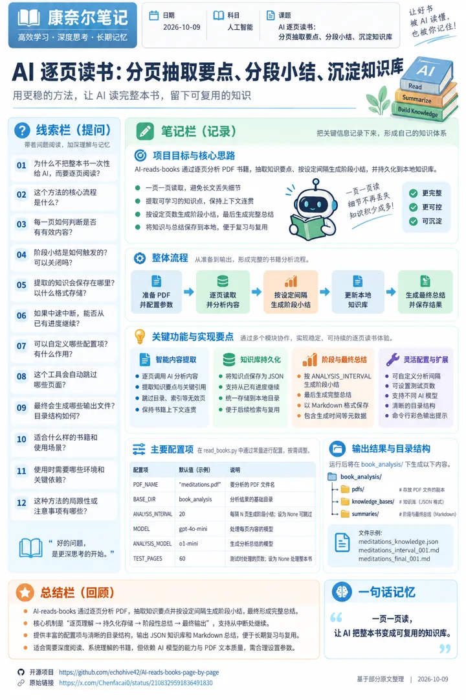
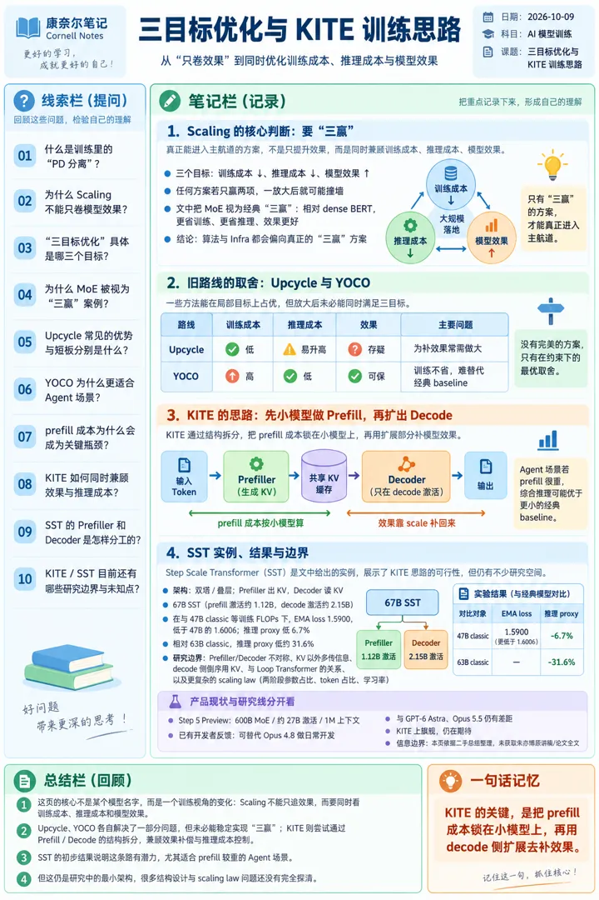

6 张技术海报
点海报看原图；每张右侧是 X 原帖信息（时间为美东 ET）。

#1 · X 原帖信息
AI-reads-books：让 AI 逐页读书、分段小结、沉淀知识库
陈发财 @Chenfacai0
发帖时间：2026-10-08 18:52 ET
原帖：https://x.com/Chenfacai0/status/2108329591836491830
原文链接：https://github.com/echohive42/AI-reads-books-page-by-page
发帖时间：2026-10-08 18:52 ET
原帖：https://x.com/Chenfacai0/status/2108329591836491830
原文链接：https://github.com/echohive42/AI-reads-books-page-by-page
### README.md # 📚 AI reads books: Page-by-Page PDF Knowledge Extractor & Summarizer The `read_books.py` script performs an intelligent page-by-page analysis of PDF books, methodically extracting knowledge points and generating progressive summaries at specified intervals. It processes each page individually, allowing for detailed content understanding while maintaining the contextual flow of the book. Below is a detailed explanation of how the script works: ### Features - 📚 Automated PDF book analysis and knowledge extraction - 🤖 AI-powered content understanding and summarization - 📊 Interv…
#2 · X 原帖信息
android-adb-control：让 Agent 通过 ADB 遥控安卓手机（观察→执行→验证）
范凯说AI @fankaishuoai
发帖时间：2026-10-08 23:28 ET
原帖：https://x.com/fankaishuoai/status/2108399049313579169
原文链接：https://github.com/robbin/android-adb-control,
发帖时间：2026-10-08 23:28 ET
原帖：https://x.com/fankaishuoai/status/2108399049313579169
原文链接：https://github.com/robbin/android-adb-control,
### README.md # Android ADB Control 让 Agent 通过 ADB 操控安卓手机：观察界面、执行一步、验证结果，再决定下一步。 An instruction-only Agent Skill for Android phone control via ADB. 作者：范凯 and Agent（Friday） · [MIT License](LICENSE)
#3 · X 原帖信息
万字长文｜Cloudflare 从入门到精通，一个域名搞定建站、邮箱、存储和 AI 后端
小墨同学 @xiaomovps
发帖时间：2026-10-08 21:38 ET
原帖：https://x.com/xiaomovps/status/2108371593747709979
发帖时间：2026-10-08 21:38 ET
原帖：https://x.com/xiaomovps/status/2108371593747709979
万字长文｜Cloudflare 从入门到精通，一个域名搞定建站、邮箱、存储和 AI 后端 很多人第一次登录 Cloudflare，是因为某篇建站教程让你“把域名接进 Cloudflare”。照着改完域名服务器，网站确实能打开了，可再回到控制台，左边一长串菜单摆在眼前：域名、计算、AI、存储和数据库、应用程序安全、Zero Trust。每一项都像有用，又不知道哪些跟自己有关。 我从写 VPS 教程开始就一直在用 Cloudflare，前后单独写过域名托管、CDN、WAF 规则、邮件路由和优选 IP。9 月发过一条 Cloudflare 十项福利，后来又陆续发了域名邮箱、防 AI 爬虫、数字名片、低成本做 AI 应用和新 CLI 几条短帖。零散的点越攒越多，这次干脆串成一篇。 这篇文章用一个域名贯穿全程。先把域名接进 Cloudflare，配好解析和 HTTPS；再从 GitHub 仓库发布一个网站，给域名配一个能收信的邮箱，用 R2 存图片和备份；最后写一个 Worker，调用 Workers AI 跑开源模型，并把整个账号交给 Agent 通过命令行管理。 标题写了从入门到精通，这里的精通也有一个实际范围。你能用免费版独立搭起个人网站、域名邮箱、对象存储和一个小型 AI 接口，知道每项服务的免费额度在哪里，遇到常见报错知道先查什么，也知道涉及 API 令牌和删除操作时该停下来确认…

#4 · X 原帖信息
训练也能“PD 分离”：阶跃星辰朱亦博谈 Scaling 三目标优化与 KITE/SST
SuSu_酥酥 @NFT_Chen
发帖时间：2026-10-08 20:51 ET
原帖：https://x.com/NFT_Chen/status/2108359573765792250
发帖时间：2026-10-08 20:51 ET
原帖：https://x.com/NFT_Chen/status/2108359573765792250
惊了！训练也能“PD 分离”：阶跃星辰 CTO 朱亦博把 Scaling 从“只卷效果”改写成三目标优化，训练成本、推理成本、模型效果，缺一赢就落地不了！而 Step-5 Preview 只是开胃菜！ 要点如下： 真正能进主航道的，是“三赢”。MoE 当年不纠结等参数量：相对 dense BERT，训练更省、推理更省、效果更好，所以算法和 Infra 都没理由不用。Upcycle、YOCO 往往只赢两项目标，一放大就撞墙。 Upcycle 省训练，但社区担心同尺寸效果不如 from scratch；为了把效果补回来把模型做大，推理成本又上去，三赢破局。 YOCO 很适合 Agent：Step 3.5 Flash 被全球用户打了几万亿 token 后，他们看到推理成本里 prefill 占比明显上升，省 prefill 的结构值得看。但 DSv4.1 Flash 那条路是用约 2 倍尺寸保效果、再靠 YOCO 压推理，训练成本也按大尺寸付。旗舰团队会觉得：不省训练，就很难替代经典 LLM baseline。 KITE 的解法：先训一个更小、专做 prefill 的子结构，生成全部 KV；再扩一块只在 decode 激活、复用这份 KV 的部分，继续预训练。硬约束是扩出来的参数不能改 KV。于是模型可以靠 scale 把效果补回来，prefill 成本却仍按小模型算。Agent…
#5 · X 原帖信息
GPT-6 智能界面：组件库 + 流式编译器，让回答变成可交互 UI
LinearUncle @LinearUncle
发帖时间：2026-10-08 21:52 ET
原帖：https://x.com/LinearUncle/status/2108374989456249241,
原文链接：https://openai.com/zh-Hans-CN/index/gpt-6-for-everyone/
发帖时间：2026-10-08 21:52 ET
原帖：https://x.com/LinearUncle/status/2108374989456249241,
原文链接：https://openai.com/zh-Hans-CN/index/gpt-6-for-everyone/
# 让每个人都能使用 GPT‑6 和智能界面 上个月，我们向付费用户推出了首批 GPT‑6 模型。今天，我们推出一款全新的 GPT‑6 模型，专为每周使用 ChatGPT 的超过 12 亿人打造，让更多人用上新一代智能技术。 ChatGPT 中的 GPT‑6 带来了智能界面这一新功能，让 ChatGPT 能以完全可交互的用户界面快速作答，让日常问题的答案更直观、复杂主题更易学，还能即时创建工具，解决眼前的任务。
#6 · X 原帖信息
Automating eval design and hillclimbing with Claude（claude-api skill 的 build-eval 与 hillclimb）
晓 @codingzx
发帖时间：2026-10-08 00:12 ET
原帖：https://x.com/codingzx/status/2108047874424786979
原文链接：https://claude.dev/blog/automating-eval-design-and-hillclimbing/
发帖时间：2026-10-08 00:12 ET
原帖：https://x.com/codingzx/status/2108047874424786979
原文链接：https://claude.dev/blog/automating-eval-design-and-hillclimbing/
Evaluations provide a signal on how your app or skill is performing on specific tasks. But designing evaluations, and improving performance on them without fooling yourself, is hard. We've added guidance for both to the claude-api skill. With the skill, you can run `/claude-api build-eval` to build an evaluation inside your codebase, and run `/claude-api hillclimb` to improve your application against it, one change at a time, with a held-out set of examples to catch overfitting. In this article, we highlight the principles of good eval design and hillclimbing first, then show how Claude Code…
王玮的 X 海报日报 · 每天从 X 推荐流挑技术帖，用 ChatGPT 生成康奈尔笔记海报 · 每张都附 X 原帖信息 · 风格改编自 VitePress（MIT）